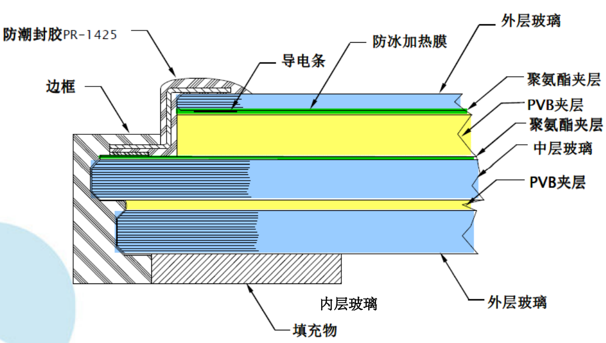
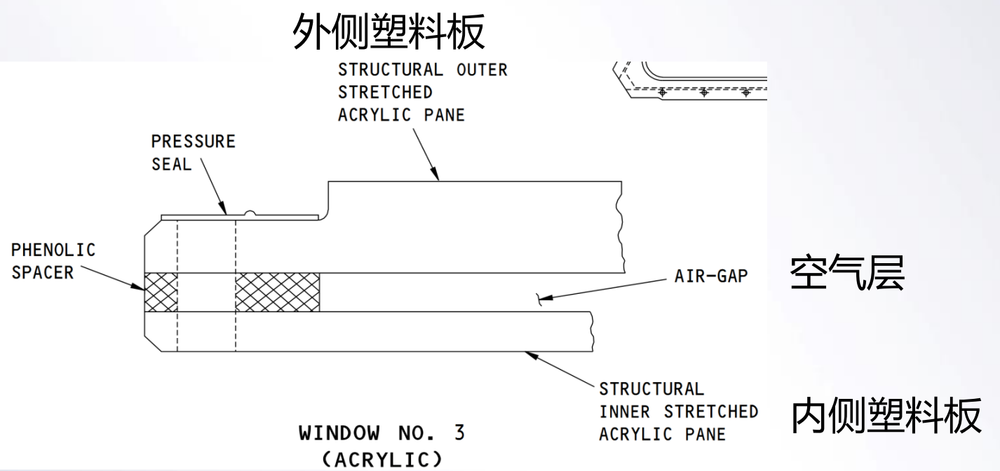
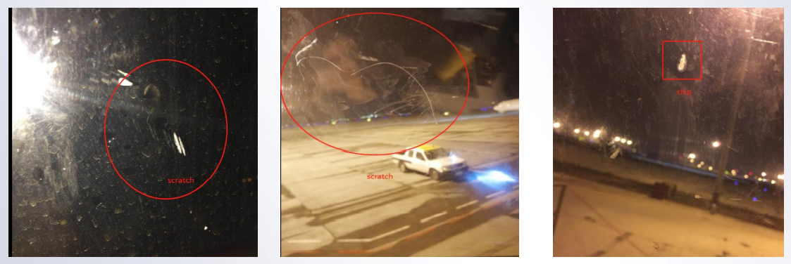
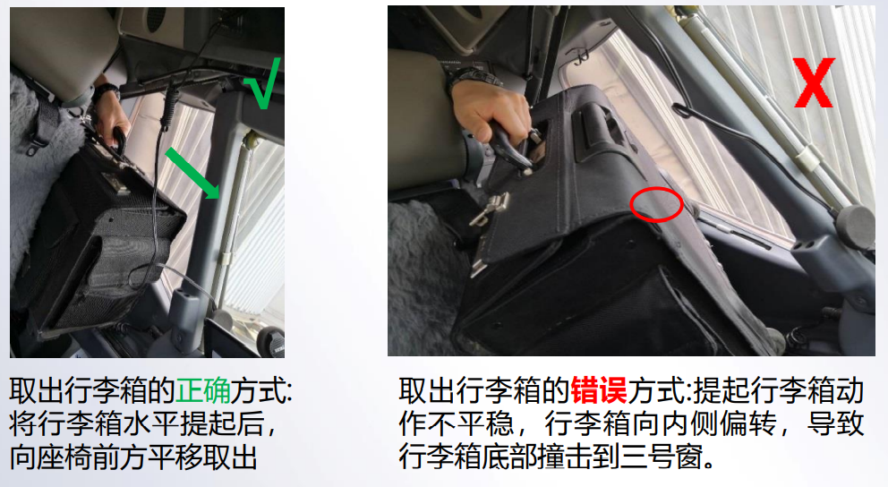

外部相关链接:
暂无
飞机风挡构造
➢飞机风挡玻璃分内3层，内层玻璃和中层玻璃是结构件，外层玻璃为非结构件。
➢风挡加温部件位于外层玻璃和中间层玻璃中间，聚氨酯夹层上方。

新构型的737NG（EFLOW构型之后的NG）采用了新的风挡加温控制盒，由原先的2个WHCU变成了4个WHCU控制风挡加温工作。
此构型的WHCU 有个较典型的故障现象：
在飞机推出转换电源过程中，容易出现风挡过热灯点亮。
建议：如遇在启动好发动机电源转换后窗加温灯亮，机组可先尝试开关相关风挡的窗加温的开关，进行复位。
➢如果机组循环风挡加温开关后过热灯熄灭，说明WHCU进入了备用控制模式，不影响窗加温功能，无需进一步处理；
➢如果机组循环风挡加温开关后过热灯仍亮，才表系统有真实故障，需参考MEL放行或通知机务排故。
常见风挡故障及处理建议：
➢ 如果使中发现窗子突然出现裂纹，不论初始裂纹是FOD造成还是加温系统故障导致，操作条件允许时，应第一时间关闭相应窗子的电加温，以避免裂纹扩展覆盖整个风挡。
➢ 就737的1号风挡而言，风挡主要有三层玻璃构成，加温故障导致的裂纹一般都发生在最外侧的非关键结构层上，一般不会影响窗组件的结构强度。发生玻璃裂纹时，建议不用过度反应。
➢ 正常窗加温温度为43℃， 夏季阳光曝晒会导致窗子温度比正常高，甚至温度高到点亮过热灯（62℃），此时建议尝试关闭窗加温一段时间再接通。
➢ 如果使用中感受到窗子温度达到烫手的程度，而过热灯不亮，则表明窗加温的过热保护功能失效，需要及时通知机务检查。
737NG 三号窗使用注意事项:
⚫ 737NG飞机驾驶舱三号窗为透明塑料材质，由内外两层透明塑料板组成，两层透明塑料板都是承受载荷的结构件，中间隔着一层空气用于保温。
⚫ 内侧塑料板上有呼吸孔，正常情况下，内侧塑料板通过呼吸孔平衡内外表面压力差；飞机增压压差载荷是由外侧塑料板承担；但外侧塑料板损坏后，内侧塑料板也有足够强度承受飞机增压压差。因此从安全角度讲，三号窗内侧塑料板上虽然常见有划伤、撞击凹坑等损伤，但 只是降低了安全裕度，并不会直接导致飞机释压风险。

⚫ 但从运行角度看，三号窗内侧塑料板损伤的影响比较大，会导致飞机放行 困难。
➢ 手册对三号窗的损伤标准非常严格，机队超标损伤较多。更换三号窗需要拆除装饰板、安装后还需要等待密封胶固化，更换工作大概需要6小时左右。
➢ 大东航270余架737飞机，单在2018年就更换了102块三号窗。单靠更换根本无法应对日益增多的三号窗损伤问题。

建议：
为了保证飞行安全，减少不必要的停场排故，建议机组在日常工作中避免硬物接触三号窗，尤其在取放行李箱时注意避免行李箱轮子撞击到三号窗。

建议：
拉遮光帘时，注意避免帘子上的金属部件直接和窗玻璃相磨。
1 窗过热 (OVERHEAT）指示灯
亮（琥珀色）– 探测到过热情况。
Note: 如果窗的电源中断，过热（OVERHEAT）灯仍然亮。
2 窗加温接通 （ON）指示灯
亮（绿色）– 正为选定的窗加温。
熄灭–
• 电门在关闭（OFF）位，或
• 已探测到过热，或
• 系统发生故障
• 系统已达到所需温度。
3 窗加温 （WINDOW HEAT）电门
ON（开）– 对选定的窗实施加温。
OFF（关）– 未使用窗加温。
4 窗加温（WINDOW HEAT）测试电门（由弹簧保持在中立位）
OVHT（过热）– 模拟过热状态。
PWR TEST（电源测试）– 提供可靠性测试。
1 足部空气（FOOT AIR）控制
拉出– 为飞行员腿部提供空调空气。
2 风挡空气（WINDSHIELD AIR）控制
拉出– 为1号窗提供空调气来除雾。
驾驶舱窗加温 (各选型稍有不同)
驾驶舱1，2，4和5号窗是由两面都有乙烯基芯的玻璃层压迭而成。驾驶舱4号窗还在内表面附加层压了乙烯基层和树脂层。3号窗由一个充气空间隔开的两块丙烯基玻璃压迭组成。
(另部分选型例)1，2号窗外部的导电涂层可以进行电加温防止结冰并除雾。4，5号窗外部的导电涂层可以进行电加温防止结冰并除雾。3号窗未采用电加温。
驾驶舱窗加温操作(选型不同)
温度控制器保持1，2号窗的正确温度，以确保飞鸟撞击时窗具有最大强度。如果测得过热的情况，则1，2号窗的电源会自动断开。位于5号窗上的热敏电门按需打开和关闭，使4、5号窗保持合适的温度。